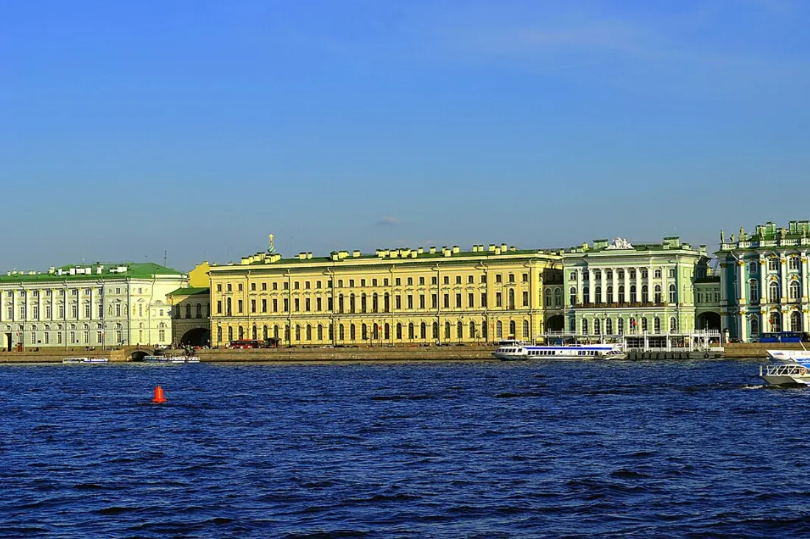

Государственный Эрмитаж
Санкт-Петербург, Россия
Один из крупнейших и старейших музеев мира. Коллекция насчитывает более 3 миллионов экспонатов, включая шедевры Леонардо да Винчи, Рембрандта и Рафаэля. Занимает шесть исторических зданий на Дворцовой набережной.
Сайт музея